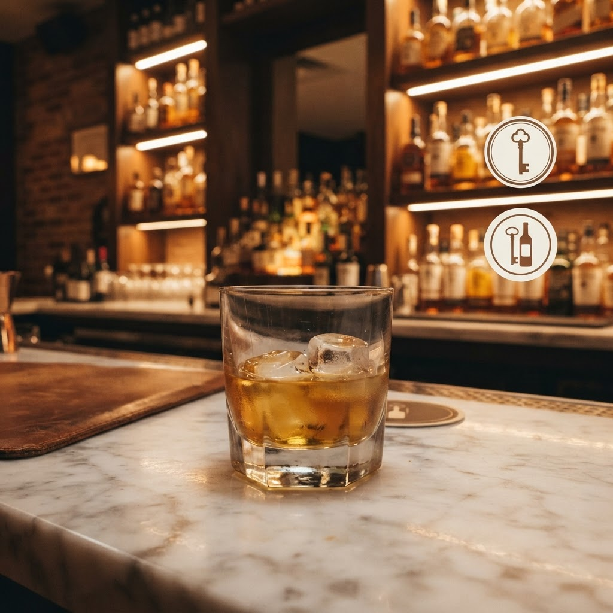
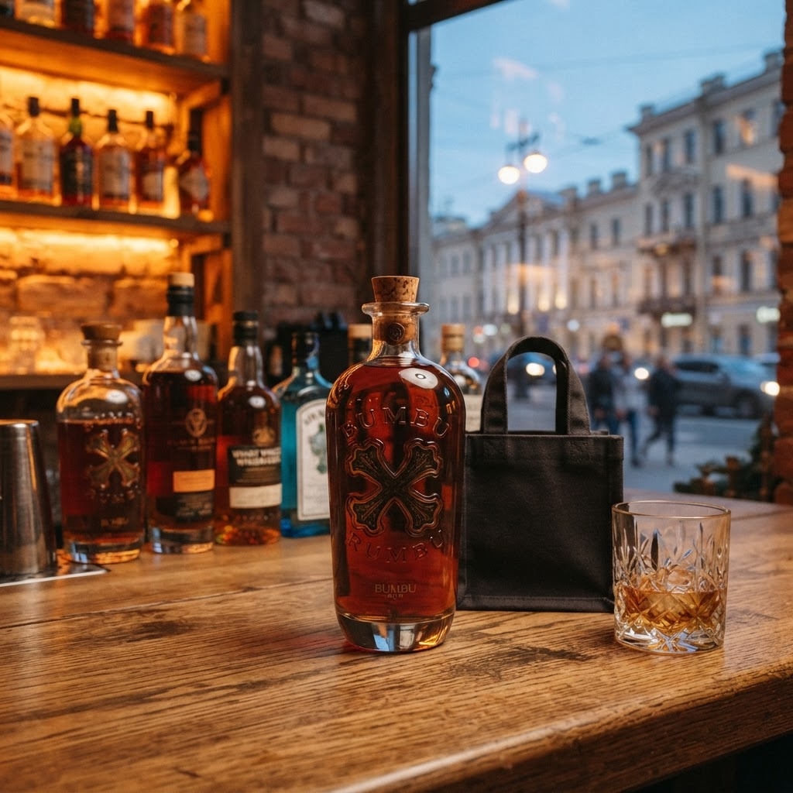
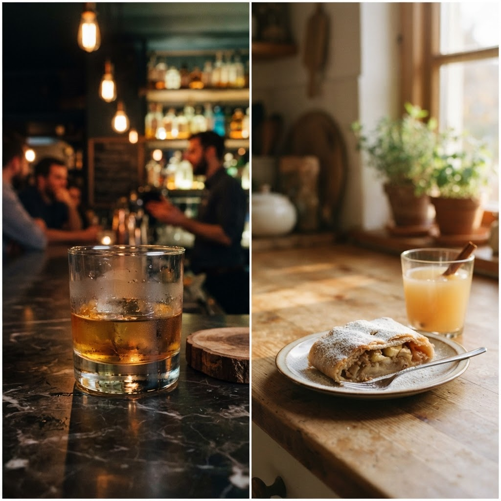

Мастер Артём Красносельский напитки на домБыстрая доставка любимых напитков в любой уголок Красносельского района к вашему столуВ Красносельском районе Петербурга жизнь кипит. «Мастер Артём Красносельский напитки на дом» ускоряет доставку.

Проверьте четкость контура металлического креста на бутылке. Оригинальный Bumbu имеет плотно приклеенную этикетку без следов клея. Также всегда сканируйте QR-код на акцизной марке через приложение ФСРАР.
Да. Укажите желаемое время приезда курьера при оформлении.
Да. Доставка осуществляется только совершеннолетним покупателям.
Выбирайте альтернативу из предложенного списка в боте.
Стоимость доставки включена в цену при заказе от определенной суммы. В Красносельском районе логистика занимает до сорока минут. Точную сумму уточняйте при подтверждении заявки по телефону.
Да. Доставка осуществляется только совершеннолетним покупателям.
Я приехал на заказ в ЖК на Ленинском проспекте. Клиент выбрал ром Bumbu. Средняя цена в Петербурге варьируется от 2700 до 3500 рублей. Перед оплатой я всегда проверяю акцизную марку. Это специальная бумажная наклейка с голограммой. Она подтверждает легальность ввоза в Россию. Также смотрю на качество полиграфии этикетки. Четкие шрифты без размытия говорят об оригинале. «Мастер Артём Красносельский напитки на дом» гарантирует качество. Я показываю бутылку до передачи в руки клиенту.

Клиент спросил о сроках годности. Спиртные напитки крепостью выше 25 градусов срока годности не имеют. Я объяснил устройство дозатора. Это встроенное приспособление в горлышке. Оно ограничивает скорость подачи жидкости при наливании. Важно убедиться, что кольцо на крышке не повреждено. Целостность упаковки — главный признак безопасности. Я также проверяю отсутствие осадка внутри. Присутствие мути — повод отказаться от приема товара.
Сделка закрыта. Я сверил данные чека с приложением. Оплата прошла быстро через терминал. Клиент получил напиток в назначенное время. Моя работа — обеспечить быструю доставку любимых напитков в любой уголок Красносельского района к вашему столу. Мы зафиксировали финальную стоимость. Претензий к состоянию тары не возникло. Процесс покупки завершен по всем правилам безопасности. Довольный клиент — стандарт моей ежедневной работы в Петербурге.